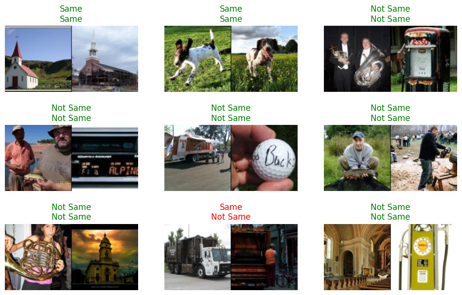
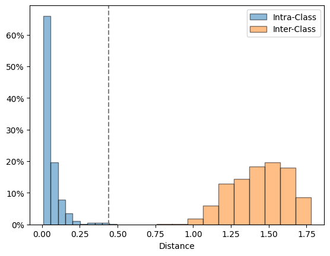

from fastai_datasets.all import *Pair Matching (AKA Verification)
A binary classsification task of deciding whether a pair of inputs “matches” (belongs to the same class) or not
ThresholdSiamese
ThresholdSiamese (*args, distance_metric=<function normalized_squared_euclidean_distance>)
Combines a deep similarity metric with a threshold to produce a binary classifier.
pairs = Pairs(Imagenette(160), .1)
dls = pairs.dls(after_item=Resize(128),
after_batch=Normalize.from_stats(*imagenet_stats))Training
We can construct the backbone from a pretrained classifier:
classifier = resnet34(weights=ResNet34_Weights.DEFAULT)
siamese = ThresholdSiamese(create_body(model=classifier, cut=-1))As explained in Threshold.fit, we can fit the threshold directly:
ThresholdSiamese.fit_threshold
ThresholdSiamese.fit_threshold (train_dl:fastai.data.load.DataLoader)
Picks a threshold that maximizes the accuracy on a dataloader
siamese.fit_threshold(dls.train)
learn = Learner(dls, siamese, metrics=accuracy)
learn.validate()(#2) [0.5470428466796875,0.8622449040412903]We can finetune the backbone in multiple ways:
Cross Entropy
Since ThresholdSiamese is a classifier, we can finetune it using the cross entropy loss, which will fit the backbone and the threshold together:
learn.fit(5, 1e-4)| epoch | train_loss | valid_loss | accuracy | time |
|---|---|---|---|---|
| 0 | 0.507261 | 0.415415 | 0.900510 | 00:16 |
| 1 | 0.401674 | 0.354739 | 0.928571 | 00:17 |
| 2 | 0.337908 | 0.326078 | 0.920918 | 00:10 |
| 3 | 0.293121 | 0.304959 | 0.931122 | 00:09 |
| 4 | 0.259705 | 0.288149 | 0.933673 | 00:09 |
Contrastive Loss
Conversely, we can finetune the backbone directly, and then fit the threshold again:
classifier = resnet34(weights=ResNet34_Weights.DEFAULT)
siamese = DistanceSiamese(create_body(model=classifier, cut=-1))
learn = Learner(dls, siamese, ContrastiveLoss())
learn.fit(5, 1e-4)| epoch | train_loss | valid_loss | time |
|---|---|---|---|
| 0 | 0.394097 | 0.317473 | 00:09 |
| 1 | 0.272054 | 0.211472 | 00:09 |
| 2 | 0.199547 | 0.171662 | 00:09 |
| 3 | 0.152234 | 0.149710 | 00:09 |
| 4 | 0.118441 | 0.140471 | 00:09 |
siamese = ThresholdSiamese(siamese.backbone)
siamese.fit_threshold(dls.train)
learn = Learner(dls, siamese, metrics=accuracy)
learn.validate()(#2) [0.36787182092666626,0.9081632494926453]Visualizing Results
learn.show_results()
If we plot the distance histogram, we can also see the threshold:
siamese.plot_distance_histogram(dls.train)